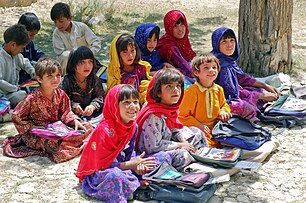

Schools are organized spaces purposed for teaching and learning. The classrooms where teachers teach and students learn are of central importance. Classrooms may be specialized for certain subjects, such as laboratory classrooms for science education and workshops for industrial arts education.
Education in India is primarily managed by the state-run public education system, which falls under the command of the government at three levels: central, state and local. Under various articles of the Indian Constitution and the Right of Children to Free and Compulsory Education Act, 2009, free and compulsory education is provided as a fundamental right to children aged 6
Education is the transmission of knowledge, skills, and character traits and manifests in various forms. Formal education occurs within a structured institutional framework, such as public schools, following a curriculum. Non-formal education also follows a structured approach but occurs outside the formal schooling system, while informal education entails unstructured learning through daily experiences. Formal and non-formal education are categorized into levels, including early childhood education, primary education, secondary education, and tertiary education. Other classifications focus on teaching methods, such as teacher-centered and student-centered education, and on subjects, such as science education, language education, and physical education. Additionally, the term "education" can denote the mental states and qualities of educated individuals and the academic field studying educational phenomena.
